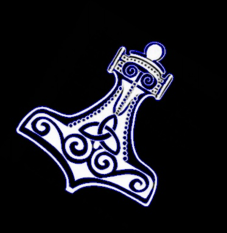

The Ramer–Douglas–Peucker algorithm, also known as the Douglas–Peucker algorithm and iterative end-point fit algorithm, is an algorithm that decimates a curve composed of line segments to a similar curve with fewer points.
A Convex object is one with no interior angles greater than 180 degrees. A shape that is not convex is called Non-Convex or Concave.
Given a set of points that define a shape, how do we find its convex hull? The algorithms for finding the Convext Hull are often called Gift Wrapping algorithms.
It is still a popular algorithm and in a vast majority of cases, it produces the right result. This algorithm is implemented in the convexHull class in OpenCV. Let’s now see how to use it.
# Import Necessary library
import cv2
import numpy as np
# Read Input image
img = cv2.imread("Hammer.png", 1)
# convert to grayscale
gray = cv2.cvtColor(img, cv2.COLOR_BGR2GRAY)
# blur the image to remove noise
blur = cv2.blur(gray, (3, 3))
# Obtain thresholding between 50 and 255 intensity
ret, thresh = cv2.threshold(blur, 50, 255, cv2.THRESH_BINARY)
# Finding contours for the thresholded image
im2, contours, hierarchy = cv2.findContours( thresh, cv2.RETR_TREE, cv2.CHAIN_APPROX_SIMPLE)
# create hull array for convex hull points
hull = []
# calculate points for each contour
for i in range(len(contours)):
# Creating Convex Hull object for each contour
hull.append( cv2.convexHull(contours[i], False))
# create an empty black image
drawing = np.zeros((thresh.shape[0], thresh.shape[1], 3), np.uint8)
# draw contours and hull points
for i in range(len(contours)):
# green - color for contours
color_contours = (0, 255, 0)
# blue - color for convex hull
color = (255, 0, 0)
# draw ith contour
cv2.drawContours(drawing, contours, i, color_contours, 1, 8, hierarchy)
# draw ith convex hull object
cv2.drawContours(drawing, hull, i, color, 1, 8)
# Draw all the contours in image
cv2.drawContours(img, contours, -1, (255, 0, 0), 1)
# Save image as contour1.jpg
cv2.imwrite("convexHull.jpg", img)
Input Image is:
Output Image will be:
